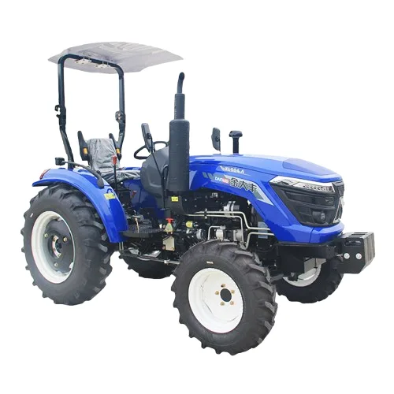
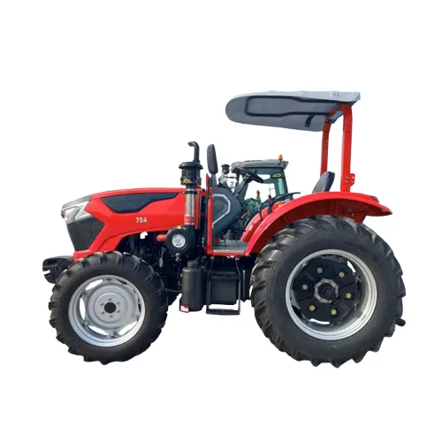
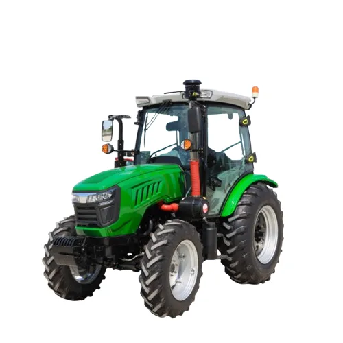
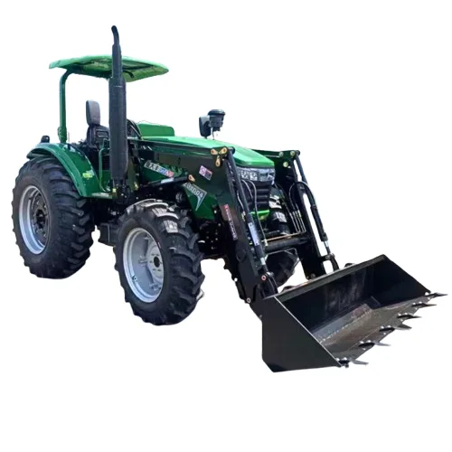
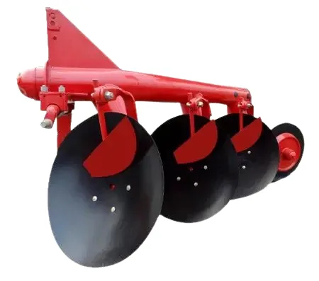
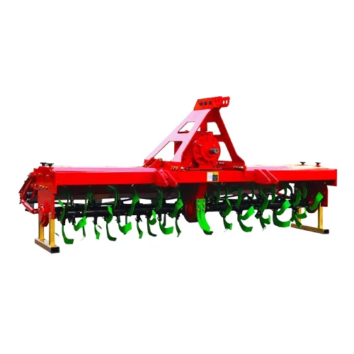
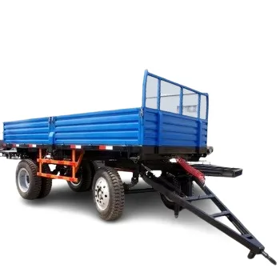
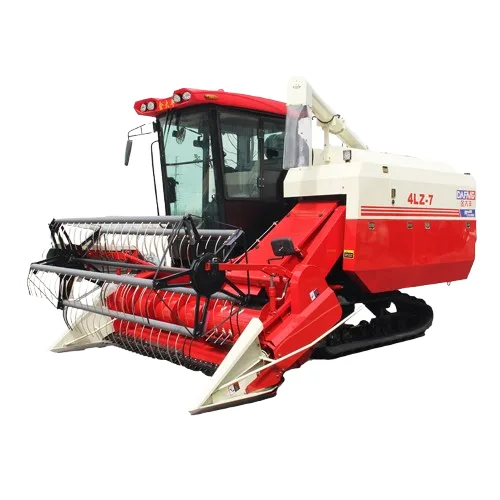
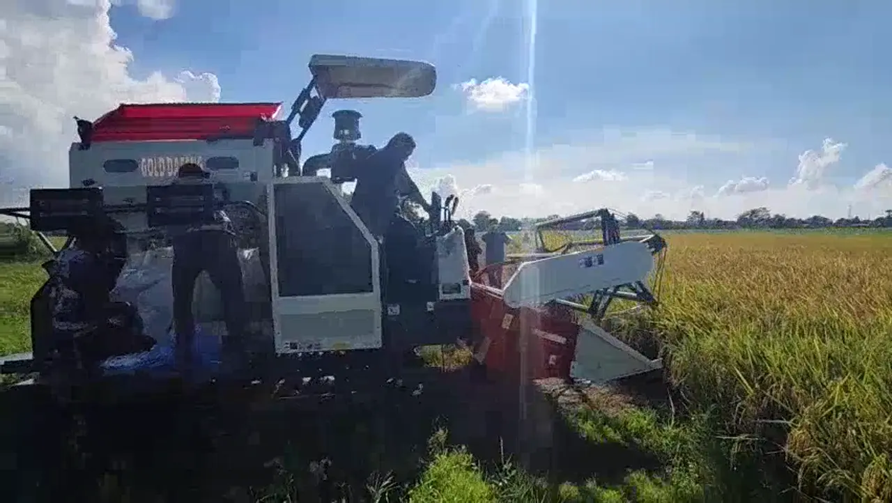
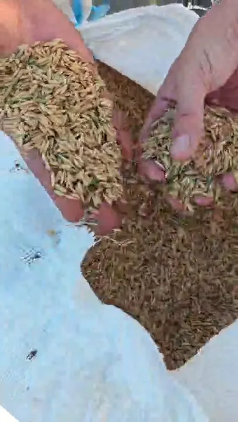

Olah lahan dan panen lebih cepat.
Traktor roda empat, implemen, dan harvester yang dipilih sesuai luas lahan dan komoditas Anda, didukung ketersediaan suku cadang.

Masalah yang kami bantu selesaikan
Tenaga kerja musiman
Olah lahan dan panen yang bergantung pada tenaga manual sulit dijadwalkan dan mahal.
Panen terlambat
Keterlambatan panen berisiko menurunkan hasil. Mesin membuat jadwal lebih terkendali.
Mesin berhenti
Unit tanpa suku cadang berhenti saat musim sibuk. Itu sebabnya dukungan parts dibahas sejak awal.
Traktor roda empat
Tersedia dalam berbagai kelas daya. Rekomendasi dibuat setelah kami memahami luas dan kondisi lahan Anda.

Traktor kanopiUntuk lahan terbuka
Traktor kanopiKonfigurasi alternatif
Traktor kabinKenyamanan operator
Traktor front loaderOlah lahan dan angkut materialImplemen pendukung

Bajak piringanPengolahan tanah
Rotary tillerPenghalusan tanah
TrailerAngkut hasil panenHarvester dan pekerjaan di lapangan



Hasil panen dicek langsung di lapangan

Kualitas hasil panen langsung terlihat di lapangan. Kami bantu Anda memilih unit dan perlengkapan yang sesuai dengan komoditas dan target panen Anda.
Untuk setiap sektor
Mining
- Penyiapan lahan reklamasi dan revegetasi pascatambang
- Pengolahan lahan di area konsesi yang dikelola perusahaan
Agrikultur
- Olah tanah dan penanaman di lahan luas
- Panen lebih cepat untuk kelompok tani dan perkebunan
- Pengadaan untuk dinas, koperasi, dan perusahaan
Cara kerjanya
- Ceritakan kebutuhanIsi formulir singkat atau chat langsung.
- RekomendasiKami susun opsi yang paling cocok, termasuk spesifikasi lengkap.
- Penawaran resmiHarga, waktu, dan ketentuan disampaikan secara jelas.
- Pengiriman & dukunganKami mendampingi sampai unit beroperasi.
Mulai dari satu pesan.
Ceritakan luas lahan dan jenis pekerjaan. Kami rekomendasikan unit yang sesuai dan kirim penawaran resmi.
Pertanyaan umum
Apakah spesifikasi dan harga tersedia?
Ya. Spesifikasi lengkap dan penawaran resmi kami kirim setelah kami memahami kebutuhan Anda.
Bagaimana memilih unit yang tepat?
Kami menanyakan luas lahan, komoditas, dan kondisi lapangan, lalu merekomendasikan unit dan perlengkapannya.
Bagaimana dengan suku cadang?
Ketersediaan suku cadang dan layanan purna jual kami bahas sebelum Anda memutuskan.